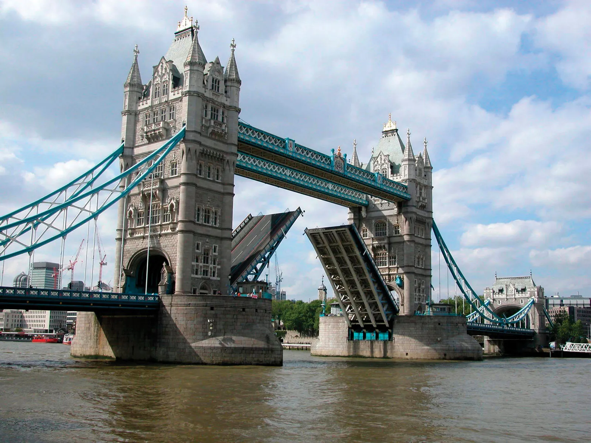

Du lịch London Anh
DU LỊCH LONDON ANH

15.000.000 VNĐ
GIỚI THIỆU
London nổi tiếng với kiến trúc đa dạng và phong phú, bao gồm các
công trình lịch sử như Tòa nhà Nghị viện, Tòa thánh Paul, Tháp đồng hồ Big Ben
và cung điện Buckingham. Ngoài ra, London còn có nhiều bảo tàng nổi tiếng như
Bảo tàng British, Bảo tàng Khoa học và Bảo tàng Lịch sử Tự nhiên.
Thời gian
tour:
1 tuần

Địa điểm tham
quan:
LonDon (Anh)
ĐẶT NGAY
Tour London là chuyến du lịch để khám phá thành phố London, thủ đô của
Vương quốc Anh. Tour London thường bao gồm các điểm tham quan nổi tiếng như Tòa nhà Nghị
viện, Tháp đồng hồ Big Ben, cung điện Buckingham, Bảo tàng British, Bảo tàng Khoa học, Bảo
tàng Lịch sử Tự nhiên và London Eye. Du khách cũng có thể tham gia các tour đi bộ để khám
phá các khu phố lịch sử của London như Soho, Covent Garden và Camden Town. Ngoài ra, tour
London còn có thể bao gồm thăm quan các điểm đến ngoại ô của thành phố như Khu vườn Kew,
Cung điện Hampton Court và Lâu đài Windsor. Du khách cũng có thể tham gia các tour tham quan
các địa điểm điều tra của Sherlock Holmes, tour ẩm thực để thưởng thức các món ăn đặc trưng
của London, hay tham gia các tour mua sắm để khámphá các khu mua sắm nổi tiếng như Oxford
Street, Regent Street và Knightsbridge.
ĐIỂM NỔI BẬT TRONG CHƯƠNG TRÌNH:
TOÀ NHÀ NGHỊ VIỆN VÀ THÁP ĐỒNG HỒ BIGBEN - BIỂU TƯỢNG CỦA
LONDON
CUNG ĐIỆN BUCKINGHAM: NƠI Ở CUA HOÀNG GIA ANH
BẢO TÀNG BRITISH - BẢO TÀNG LỚN NHẤT CỦA VƯƠNG QUỐC ANH
LONDON EYE - VÒNG QUAY KHỔNG LỒ TRÊN SÔNG THAMES
KHU VƯỜN KEW - KHU VƯỜN RỘNG LỚN VỚI CÁC LOÀI THỰC VẬT HIẾM
LÂU ĐÀI WINDSOR - LÂU ĐÀI LỚN VÀ CỔ NHẤT NƯỚC ANH, NƠI HOÀNG
GIA ANH THƯỜNG TRÚ
LỊCH TRÌNH CỦA TOUR
NGÀY 1:
HÀ NỘI - LONDON (ĂN TỐI TRÊN MÁY BAY)
22h00
Xe và hướng dẫn viên đón đoàn du lịch Anh tại Quý
khách Nhà hát lớn (Đ/c: Số 1 Tràng tiền, Hà Nội) đưa ra sân bay Nội Bài, đáp chuyến
bay Hà Nội - London, VN 55 (01h30 - 07h40). Quý khách nghỉ đêm trên máy bay.
NGÀY 2:
LONDON - AMESBURY - BATH - BRISTOL (ĂN TRƯA, TỐI)
07h40
Quý khách tới sân bay. Xe và HDV đón Quý khách tại sân
bay và đưa Quý khách tới Thành phố Amesbury (cách London 130 km ~ 02h00). Tới
Amesbury, Quý khách tham quan: Bãi đá cổ Stonehenge Site
Bãi đá cổ Stonehenge Site
12h30
Ăn trưa tại nhà hàng
13h30
Quý khách di chuyển đến thành phố City of Bath (cách
Amesbury 64 km ~ 01h10) tham quan:
- Nhà thờ lớn Bath Abbey - một nhà thờ giáo xứ Anh giáo được thành lập vào thế kỷ thứ 7 - một trong những ví dụ lớn nhất về kiến trúc Gothic tại các nước phương Tây.
- Ronan Baths - khu phòng tắm công cộng kiểu La mã có dòng suối nước nóng thiên nhiên được tạo ra từ lòng trái đất và trở thành khu nghỉ mát spa thời đại Geogia (công nhận di sản thế giới năm 1987)
Nhà thờ Bath Abbey
Ronan Bath
17h30
Quý khách khởi hành tới Bristol (cách Bath 21 km)
Brishtol
18h30
Tour Anh trọn gói dùng bữa tối tại nhà hàng. Nghỉ đêm
tại khách sạn Holiday Inn Filton 3* hoặc tương đương ở Bristol.
NGÀY 3:
BRISTOL - STRATFORD - MANCHESTER (ĂN SÁNG, TRƯA, TỐI)
07h30
Ăn sáng tại khách sạn
08h30
Quý khách tiếp tục khởi hành tới Thị trấn Stratford -
Upon - Avon (cách Bristol 164 kms ~1.30)
“Thị trấn Stratford nằm bên bờ sông Avon”, một cái tên
lãng mạn. Đó là một thị trấn nhỏ bé, cổ kính và yên bình, đây còn là nơi sinh thành
và gắn với tuổi thơ của nhà viết kịch William Shakespeare. Khắp trong thị trấn là
những quán rượu, tiệm trà nhỏ xíu hàng trăm năm tuổi, ghế bàn bày ra khắp lối đi bên
cạnh những cột dây leo bám xanh ngắt. Những cửa hàng bán sách, bán đồ lưu niệm với
mái nhà và khung cửa thấp lè tè, lúp xa lúp xúp khiến nhiều người cao lớn phải cúi
đầu mới bước vào được. Trên đường đi tới thị trấn Stratford, Quý khách sẽ được ngắm
nhìn những làng mạc cổ của nước Anh cùng những lâu đài, biệt thự La Mã còn nguyên
dấu vết với những cánh đồng trù phú xanh tơi.
Thị trấn Stratford
Stratford - Upon - Avon
12h00
Ăn trưa tại nhà hàng
13h00
Quý khách khởi hành tới thành phố Manchester (cách
Stratford 195 kms ~ 2.00)
Manchester - thành phố sôi động, náo nhiệt và có vai
trò quan trọng trong suốt thời kì cách mạng công nghiệp Anh từ cuối thế kỷ 18 đến
đầu thế kỷ 19. Ngày nay, thành phố này còn nổi tiếng khắp thế giới với sân vận động
Old Trafford, là điểm đến của những người hâm mộ đội bóng Manchester United lừng
danh, từng 20 lần đăng quang ngôi vô địch nước Anh
Thành phố Manchester
Tới Manchester, Quý khách tham quan sân vận động Old
Trafford (những ngày có trận bóng, không được vào), được mệnh danh là Nhà hát của
những giấc mơ, là sân vận động lớn thứ hai nước Anh, cũng là sân nhà của đội bóng
Sân vận động Old Trafford
18h30
Ăn tối tại nhà hàng. Buổi tối tự do tham quan, mua
sắm, khám phá thành phố Manchester về đêm. Nghỉ đêm tại khách sạn Novotel Manchester
West hoặc tương đương ở Manchester.
NGÀY 4:
MANCHESTER - LÂU ĐÀI WINDSOR - LONDON (ĂN SÁNG, TRƯA, TỐI)
07h00
Đoàn du lịch Anh ăn sáng tại khách sạn
09h00
Quý khách khởi hành tới thị trấn Windsor
13h00
Ăn trưa tại nhà hàng
14h30
Quý khách tham quan lâu đài Windsor
Lâu đài Windsor (Windsor Castle) - là lâu đài lớn nhất
thế giới còn có người ở, có phần diện tích sàn lên tới 45.000m2, khi thấy quốc kỳ
Anh được treo lên có nghĩa Nữ hoàng đang hiện diện tại lâu đài; tham quan Phòng
Khánh tiết (State apartments), Phòng tranh (gallery), Nhà nguyện George (St.
George’s Chapel), Lâu đài các Hoàng tử (Castle Precincts), những con búp bê của Nữ
hoàng Mary (Queen Mary’s dolls’) và triển lãm lâu đài (The Castle exhibition).
Lâu đài Windsor
17h30
Quý khách khởi hành tới London
18h30
Ăn tối tại nhà hàng. Nghỉ đêm tại khách sạn Ibis
styles London Excel 3* hoặc tương đương ở London.
NGÀY 5:
LONDON (ĂN SÁNG, TRƯA, TỐI)
07h00
Ăn sáng tại khách sạn
09h00
Tham quan thành phố London
- Chiêm ngưỡng vẻ đẹp của cầu tháp (Tower Bridge) - cây cầu dài 244m nằm liền với tháp London, được biết đến như một công trình kiến trúc đồ sộ bắc qua sông Thames
- Chụp ảnh, ngắm nhìn bên ngoài cung điện Buckingham (Buckingham Palace) - cung điện sang trọng bậc nhất thế giới, chính là nơi ở của Hoàng gia Anh.
- • Thăm và chiêm ngưỡng quang cảnh đáng kinh ngạc từ Vòng đu quay khổng lồ London Eye siêu hiện đại. Đó là bánh xe khổng lồ quay từ từ, nằm sát bờ sông Thames.

Tower Bridge
Cung điện Buckingham

London Eye
12h00
Ăn trưa tại nhà hàng
Chiều
Quý khách tự do thăm quan
Ăn tối tại nhà hàng. Nghỉ đêm tại Khách sạn Ibis styles London Excel 3* hoặc
tương đương ở London
NGÀY 6:
LONDON - HÀ NỘI (ĂN SÁNG)
07h00
Ăn sáng tại khách sạn
08h00
Xe đưa Quý khách ra sân bay đáp chuyến bay về Hà
Nội, chuyến bay LONDON - HÀ NỘI // VN54 (11h00 - 05h05)
NGÀY 7:
TỚI HÀ NỘI (ĂN SÁNG)
05h05
Tới sân bay Nội Bài, xe đón và đưa Quý khách về
điểm tập kết ban đầu.
Chia tay, kết thúc chương trình du lịch Anh từ Hà Nội.
Những điều cần lưu ý
- London có khí hậu ôn đới ẩm, vì vậy bạn nên chuẩn bị cho các điều kiện thời tiết khác nhau, bao gồm cả mưa và gió.
- Vì London là một thành phố quan trọng của Vương quốc Anh, vì vậy bạn cần mang theo giấy tờ tùy thân như hộ chiếu hoặc thẻ căn cước để đảm bảo rằng bạn có thể di chuyển và tham quan các địa điểm.
- London là một thành phố lớn, vì vậy bạn cần phải dành đủ thời gian để khám phá các điểm tham quan và trải nghiệm văn hóa tại đây.
- London có hệ thống giao thông công cộng phát triển và phức tạp,vì vậy bạn nên tham khảo trước các phương tiện di chuyển phù hợp như tàu điện ngầm (Tube), xe buýt, taxi hoặc uber để di chuyển.
- Tiền tệ được sử dụng ở London là Bảng Anh (GBP), vì vậy bạn nên chuẩn bị đủ tiền mặt hoặc sử dụng thẻ tín dụng để thanh toán các chi phí khi đi tour.
- London là một thành phố an toàn, tuy nhiên bạn vẫn nên giữ gìn tài sản cá nhân và tránh các khu vực nguy hiểm vào ban đêm.
- London là một thành phố đa dạng về nền văn hóa, vìvậy bạn nên tôn trọng các nghị lực và tôn giáo khác nhau, và tuân thủ các quy định về ăn mặc và hành vi khi tham quan các địa điểm tôn giáo hay lịch sử
- Bạn nên lên kế hoạch lịch trình đi tour London trước để có thể khám phá được nhiều địa điểm thú vị trong thời gian hạn chế. Nên xem xét các tour đã được lập trình sẵn hoặc tìm hiểu các địa điểm mình muốn đến và tự lên kế hoạch cho chuyến đi của mình.
- London có nhiều loại ẩm thực đặc trưng, bạn nên tìm hiểu và thử các món ăn địa phương. Ngoài ra, bạn cũng nên chú ý đến giá cả và chất lượng của các quán ăn để tránh bị lừa đảo.
Chỉ từ:
5.000.000 VNĐ